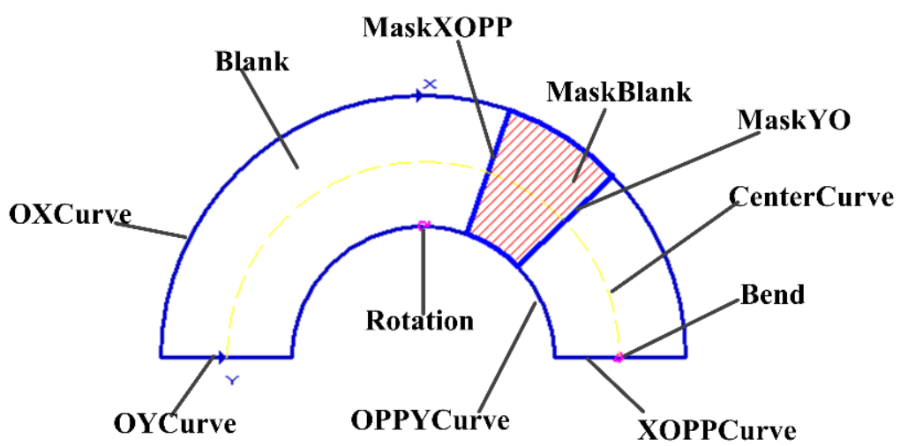
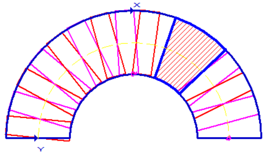

表示高级版圆探测控件，即在视图中可见的图形，例如找圆工具的查找区域，多圆多线工具的查找圆区域为该类型的向量。


| 分类 | 接口名称 | 接口描述 |
|---|---|---|
| 构造 | scGuiFindCircleEx | scGuiFindCircleEx (dof=1)默认构造函数。 |
| 函数 | GetAnnulusSection | 获取圆环段 |
| SetAnnulusSection | 设置圆环段 | |
| GetMaskRegion | 获取掩膜位置 | |
| SetMaskRegion | 设置掩膜位置 | |
| GetSearchDirectionDOF | 获取搜索方向自由度。 | |
| GetRectEx | 获取可变矩形。 | |
| SetRectEx | 设置可变矩形。 | |
| GetRectExCaliper | 获取可变矩形卡尺。 | |
| SetRectExCaliper | 设置可变矩形卡尺。 | |
| GetCaliperWidth | 获取卡尺宽度（仅在手动模式下有效）。 | |
| SetCaliperWidth | 设置卡尺宽度（仅在手动模式下有效）。 | |
| GetCaliperSpace | 获取卡尺间隔（仅在手动模式下有效）。 | |
| SetCaliperSpace | 设置卡尺间隔（仅在手动模式下有效）。 | |
| GetCaliperID | 获取卡尺ID。 | |
| SetCaliperID | 设置卡尺ID。 | |
| GetSearchDirection | 获取卡尺搜索方向。 | |
| SetSearchDirection | 设置卡尺搜索方向。 | |
| GetCaliperNum | 获取卡尺数目。 |
功能：构造scGuiFindCircleEx对象，默认搜索方向自由度为1，此参数可以不用设置，直接使用scGuiFindCircleEx()即可。
参数：
返回值：无。
功能：获取圆环段。
参数：无。
返回值：圆环段，scAnnulusSection类型。
功能：设置圆环段。
参数：
返回值：无。
功能：获取掩膜位置。
参数：无。
返回值：掩膜位置，sc2Vector类型的向量，在Python中类似于list。
功能：设置掩膜位置。
参数：
返回值：无。
功能：获取搜索方向自由度。
参数：无。
返回值：搜索方向自由度，整型。
功能：获取可变矩形。
参数：无。
返回值：可变矩形，scRectEx类型。
功能：设置可变矩形。
参数：
返回值：无。
功能：获取可变矩形卡尺。
参数：无。
返回值：可变矩形卡尺，scRectExCaliper类型。
功能：获取可变矩形卡尺。
参数：
返回值：bool类型，表示是否设置成功。
功能：获取卡尺宽度。
参数：无。
返回值：卡尺宽度，整型。
功能：设置卡尺宽度。
参数：
返回值：bool类型，表示是否设置成功。
功能：获取卡尺间隔。
参数：无。
返回值：卡尺间隔，整型。
功能：设置卡尺间隔。
参数：
返回值：bool类型，表示是否设置成功。
功能：获取卡尺ID。
参数：无。
返回值：卡尺ID，整型。
功能：设置卡尺ID。
参数：
返回值：bool类型，表示是否设置成功。
功能：获取卡尺搜索方向。
参数：无。
返回值：卡尺搜索方向，整型。
功能：设置卡尺搜索方向。
参数：
返回值：bool类型，表示是否设置成功。
功能：获取卡尺数目。
参数：无。
返回值：卡尺数目，整型。
无
```python ROI_Circle_gui = GvTool.GetToolData(“找圆工具_019.查找区域”) ROI_Annulussection = ROI_Circle_gui.GetAnnulusSection() #找圆控件中的圆环段图形
center = ROI_Annulussection.GetCenter() startangle = ROI_Annulussection.GetStartPhi() ## 起始角度，获取得是弧度 startangle = startangle.Norm() ## 归一化到0\~360 startangle = startangle.ToDouble() ## 获取归一化后的弧度值 startangle = startangle * 180/3.1415926 ## 弧度转为角度 endangle = ROI_Annulussection.GetEndPhi() ## 终止角度，获取得是弧度 endangle = endangle.Norm() ## 归一化到0\~360 endangle = endangle.ToDouble() ## 获取归一化后的弧度值 endangle = endangle * 180/3.1415926 ## 弧度转为角度
inner_radius1 = ROI_Annulussection.GetInnerCircle().GetRadius() outer_radius1 = ROI_Annulussection.GetOuterCircle().GetRadius()
annulus = ROI_Annulussection.GetAnnulus() inner_radius2 = annulus.GetInnerRadius() outer_radius2 = annulus.GetOuterRadius()
print(“圆心:”, center.GetX(), center.GetY()) print(“内圆半径1：”, inner_radius1) print(“外圆半径1：”, outer_radius1) print(“内圆半径2：”, inner_radius2) print(“外圆半径2：”, outer_radius2) print(“起始角：”, startangle) print(“终止角：”, endangle) ```